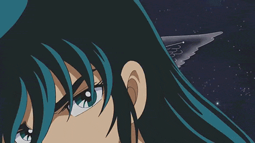

Jornal Informativo
Shiryu Cavaleiro de Dragão
Sua História
Pouco se sabe a respeito da infância de Shiryu, se o mesmo conheceu sua mãe. É certo que em dado momento Shiryu é recrutado por Mitsumasa Kido, ficando sob os cuidados da Fundação Graad, sendo treinado junto a outros órfãos. Em dado momento, é feito um sorteio que revelaria onde cada criança seria mandada para se tornarem Cavaleiros. Shiryu foi treinar nos Cinco Picos Antigos de Rozan, na China, tendo por mestre um veterano Cavaleiro de Ouro, Dohko, conhecido por todos como Mestre Ancião. Após seis anos de intenso treinamento, Shiryu finalmente consegue passar a última provação, revertendo o fluxo das águas da cachoeira. Feito isso o treinamento se encerra, e Shiryu recebe a Armadura de Dragão.
Dohko
Dohko de Libra fora um lendário e renomado Cavaleiro de Ouro do Santuário de Atena por ter lutado e sobrevivido a Guerra Santa contra Hades no Século XVIII ao lado de seu parceiro de batalhas, Shion de Áries. Após o fim do conflito e ser incumbido por Atena de vigiar o selo que aprisionava o espectros do Imperador dos Mortos, Dohko ficou recluso nos Cinco Picos Antigos de Rozan até o Século XX, período que passara a ser venerado como Mestre Ancião e, ao mesmo tempo que mantinha sua vigília, treinou Shiryu, que se tornaria o Cavaleiro de Bronze de Dragão. Nesta época, depois de descobrir que Saga de Gêmeos havia tomado o lugar de Shion como Grande Mestre do Santuário, Dohko auxilou seu discípulo junto de seus demais amigos em inúmeras ocasiões a fim de impedir os planos do Cavaleiro renegado de dominar o mundo bem como fora um dos principais articuladores para desmascarar sua farsa. Com a derrota e morte de Saga, Dohko fora escolhido como líder do Santuário em meio ao "novo despertar" de Poseidon e seus marinas.
Lutas dos Cavaleiros de Bronze
Na Saga clássica, batalhas intensas e inesquecíveis foram travadas, então coloquei um número de batalhas que aconteceram durante o anime na Saga clássica dos cavaleiros de bronze.
Quantidade de Lutas
| Seya de Pégaso | Seya venceu aproximadamente 33 lutas |
| Shiryu de Dragão | Shiryu venceu aproximadamente 29 lutas |
| Ikki de Fênix | Ikki venceu aproximadamente 25 Lutas |
| Hyoga de Cisne | Hyoga venceu aproximadamente 20 lutas |
| Shun de Andrômeda | Shun venceu aproximadamente 18 lutas |
Curiosidades
Shiryu possui o punho e o escudo mais poderoso, porém é necessário ressaltar que a Armadura de Dragão parece consumir parte do Cosmo de Shiryu com o intuito de garantir sua proteção mais eficaz. Por isso, é com frequência que ele, quando em situações delicadas, a abandone para que assim tenha condições de elevar o seu cosmo ao máximo.
Origem do nome
Shiryu é escrito com os 2 kanji: (Shi, roxo) e (Ryuu, dragão) = "Dragão Roxo" ou "Dragão Púrpura". Evidentemente, o Cavaleiro de Dragão possui este nome em atribuição à sua constelação. A cor violeta pode por assim bem representar as flores de lavanda da paisagem de Rozan, que é o símbolo entre a frieza do azul e o calor do vermelho, representando um equilíbrio entre essas cores (Durante sua fase de treinamento Shiryu usava calça roxa).
